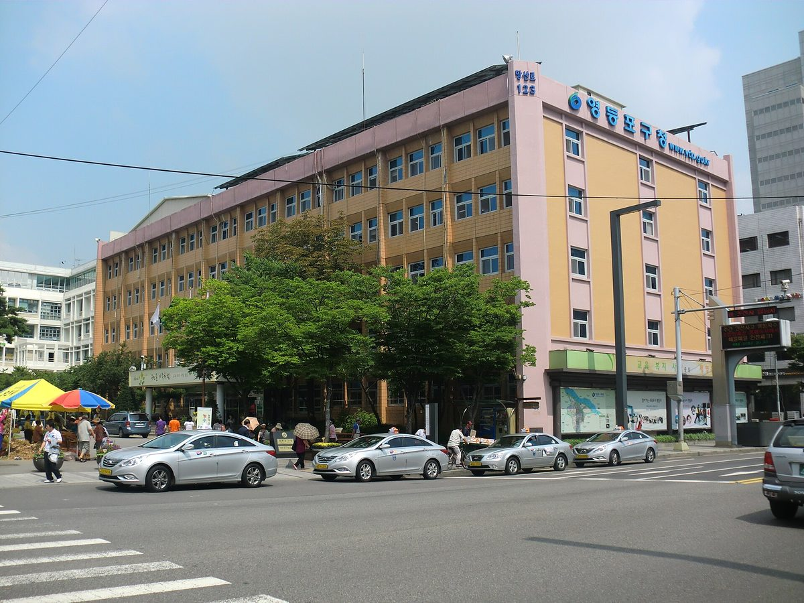

영등포 시민햇빛발전협동조합, 공영주차장·공공건물 옥상에 주민 출자 햇빛발전소 제안…구청장 측 설치 가능 여부 확인하겠다

구는 공간 발굴·사용허가만 맡고 건설비·대부료·철거비는 조합과 주민이 지는 구조…발전수익 일부는 반지하 등 취약계층 주거 개선에 쓰겠다는 구상, 대림3동 공영주차장·신길 환승주차장 거론
서울 영등포시민햇빛발전협동조합이 최근 조유진 영등포구청장을 만나 공영주차장과 공공건축물 옥상 같은 구 안의 유휴공간에 주민이 출자하는 햇빛발전소를 짓자고 제안했다. 이성준 이사장이 내놓은 구조는 조합과 주민이 출자와 금융·지원제도로 사업비를 마련하고, 구는 쓸 수 있는 공공공간을 찾아 사용허가를 내주는 일만 맡으며, 정해진 대부료와 설치·운영은 물론 나중의 철거 비용까지 사업주체가 책임지는 방식이다. 조합은 대림3동 공영주차장과 신길 환승주차장 등을 살펴봤지만 개발계획이 잡힌 곳이 적지 않아, 건물이 들어선 뒤의 옥상까지 포함하는 '유휴공간'으로 대상을 넓히자는 의견이 오갔고, 발전수익 일부는 반지하 주택의 곰팡이와 냉난방 문제 같은 취약계층 주거환경 개선에 다시 쓰겠다는 구상도 밝혔다. 전 영등포구의원인 김지연 ESG 전략이사는 구의회와 주민참여형 재생에너지 제도 개선을 논의하고 있다며, 주차 부서 사업으로 흐르지 않도록 '주민참여'를 제도에 분명히 담아야 한다고 말했다. 구청장 측은 제안된 공간에 태양광을 설치할 수 있는지 관계부서를 통해 확인해 보겠다는 뜻을 전하면서도, 서울시 소유 시설이 많고 자치구의 재정과 권한에 한계가 있어 기존 사업 연계와 외부 공모, 민관협력이 필요하다고 설명했다. 조합은 첫 발전소를 세운 뒤 2호·3호로 넓힌다는 계획이며, 이 이사장은 "영등포에서 첫 번째 도시형 시민햇빛발전 사례를 만드는 것이 목표"라고 말했다.
시민에너지 관점
구가 건설비를 한 푼도 내지 않고 대부료와 철거비까지 사업주체가 진다는 이 구상은, 도심의 공영주차장과 공공건물 옥상이 재정 부담 없이 주민의 자산이 될 수 있다는 점을 보여 준다. 자치구 권한이 좁고 서울시 소유 시설이 많다는 한계는 사실이지만, 그렇다면 서울시가 공공부지 사용허가 기준에 주민 출자 사업 몫을 따로 두면 풀 수 있는 문제다. 같은 지붕을 외부 사업자에게 빌려주면 구에는 임대료만 남지만, 주민이 출자하면 발전수익이 반지하 가구의 곰팡이와 냉난방비를 덜어 주는 데까지 돌아올 수 있다. 영등포구와 서울시는 '확인해 보겠다'에서 멈추지 말고 첫 대상지 한 곳을 정해 사용허가 절차부터 열어야 한다.
출처: 영등포투데이 2026-10-30 김홍민 원문 보기
ソウル永登浦の市民太陽光発電協同組合、公営駐車場・公共建物の屋上に住民出資の太陽光発電所を提案…区庁長側は設置の可否を確認へ
区は空間の発掘と使用許可のみ、建設費・貸付料・撤去費は組合と住民が負担する仕組み…発電収益の一部は半地下住宅など脆弱層の住まい改善に充てる構想、大林3洞公営駐車場・新吉乗り換え駐車場が候補に
ソウルの永登浦市民太陽光発電協同組合が最近、チョ・ユジン永登浦区庁長と面談し、公営駐車場や公共建築物の屋上など区内の遊休空間に住民が出資する太陽光発電所を建てようと提案した。イ・ソンジュン理事長が示した仕組みは、組合と住民が出資や金融・支援制度で事業費を用意し、区は使える公共空間を探して使用許可を出す役割だけを担い、定められた貸付料と設置・運営、さらに将来の撤去費用まで事業主体が責任を持つというものだ。組合は大林3洞公営駐車場や新吉乗り換え駐車場などを検討したが、開発計画が決まっている場所が少なくないため、建物が建った後の屋上まで含む「遊休空間」へ対象を広げようという意見が交わされ、発電収益の一部を半地下住宅のカビや冷暖房の問題など脆弱層の住環境改善に再び回す構想も示した。元永登浦区議会議員のキム・ジヨンESG戦略理事は、区議会と住民参加型再生可能エネルギーの制度改善を協議しているとし、駐車部門の事業にならないよう「住民参加」を制度に明確に盛り込むべきだと述べた。区庁長側は、提案された空間に太陽光を設置できるかどうか関係部署を通じて確認するとの意向を示す一方、ソウル市所有の施設が多く自治区の財政と権限には限界があるため、既存事業との連携や外部の公募、官民協力が必要だと説明した。組合は1号発電所を建てた後に2号・3号へ広げる計画で、イ理事長は「永登浦で初めての都市型市民太陽光発電の事例をつくることが目標だ」と語った。
市民エネルギーの視点
区が建設費を一切出さず、貸付料や撤去費まで事業主体が負うというこの構想は、都心の公営駐車場や公共建物の屋上が財政負担なしに住民の資産になりうることを示している。自治区の権限が狭く、ソウル市所有の施設が多いという限界は事実だが、それならソウル市が公共用地の使用許可基準に住民出資事業の枠を別に設ければ解決できる問題だ。同じ屋根を外部の事業者に貸せば区には賃料しか残らないが、住民が出資すれば発電収益が半地下世帯のカビや冷暖房費の負担を和らげるところまで戻ってくる。永登浦区とソウル市は「確認する」で止まらず、最初の候補地を一つ決めて使用許可の手続きから始めるべきだ。
出典: 永登浦トゥデイ 2026-10-30 キム・ホンミン 原文を読む
首尔永登浦市民光伏发电合作社提议在公营停车场和公共建筑屋顶建居民出资光伏电站…区厅长方面表示将确认能否安装
区政府只负责寻找空间和发放使用许可，建设费、租用费和拆除费由合作社与居民承担…设想将部分发电收益用于改善半地下住房等弱势群体居住条件，大林3洞公营停车场和新吉换乘停车场被提及
首尔永登浦市民光伏发电合作社近日与永登浦区厅长Cho Yu-jin会面，提议在公营停车场、公共建筑屋顶等区内闲置空间建设由居民出资的光伏电站。理事长Lee Seong-jun介绍的结构是：合作社和居民通过出资以及金融、扶持制度筹集项目资金，区政府只负责寻找可用的公共空间并发放使用许可，规定的租用费、安装和运营乃至日后的拆除费用都由项目主体承担。合作社考察了大林3洞公营停车场和新吉换乘停车场等地，但不少地块已有开发计划，因此与会者讨论把对象扩大到包括建筑落成后屋顶在内的"闲置空间"，合作社还提出设想，把部分发电收益再投入改善半地下住房霉菌、冷暖气等弱势群体的居住环境。曾任永登浦区议员的ESG战略理事Kim Ji-yeon表示，正在与区议会讨论居民参与型可再生能源的制度改进，应在制度中明确写入"居民参与"，以免项目沦为停车管理部门的工程。区厅长方面表示将通过相关部门确认提议的空间能否安装光伏设施，同时说明，首尔市所有的设施较多，自治区的财政和权限有限，需要与现有项目衔接，并借助外部公开招募和政企合作。合作社计划在建成第一座电站后扩展到第二、第三座，理事长Lee表示："目标是在永登浦打造第一个城市型市民光伏发电案例。"
市民能源视角
区政府不出一分建设费、连租用费和拆除费都由项目主体承担，这一设想说明市中心的公营停车场和公共建筑屋顶可以在没有财政负担的情况下成为居民的资产。自治区权限有限、首尔市所有设施居多，这一局限确实存在，但只要首尔市在公共用地使用许可标准中为居民出资项目单独留出份额，问题就能解决。同样的屋顶如果租给外部企业，区里只能拿到租金；如果由居民出资，发电收益就能一路回流，帮半地下住户减轻霉菌和冷暖气费用的负担。永登浦区和首尔市不应停留在"将进行确认"，而应选定第一处候选地，先启动使用许可程序。
来源: 永登浦今日 2026-10-30 Kim Hong-min 查看原文
Seoul's Yeongdeungpo citizen solar cooperative proposes resident-funded solar plants on public car parks and rooftops; district head's office to check feasibility
The district would only find sites and grant use permits, while the cooperative and residents cover construction, lease fees and removal costs; part of the revenue would go to improving semi-basement and other vulnerable housing, with the Daerim 3-dong public car park and Singil transfer car park among sites discussed
The Yeongdeungpo Citizen Solar Power Cooperative in Seoul recently met Yeongdeungpo District Mayor Cho Yu-jin and proposed building resident-funded solar plants on idle spaces in the district, such as public car parks and the rooftops of public buildings. Under the structure outlined by chairman Lee Seong-jun, the cooperative and residents would raise the money through member investment and financing and support schemes, the district would only identify usable public spaces and grant use permits, and the project operator would pay the set lease fees and bear the costs of installation, operation and eventual removal. The cooperative looked at sites including the Daerim 3-dong public car park and the Singil transfer car park, but because many sites already have development plans, participants discussed widening the target to "idle spaces" that include rooftops of buildings yet to be built, and the cooperative also outlined a plan to put part of the revenue back into improving the homes of vulnerable residents, such as mould and heating and cooling problems in semi-basement flats. Kim Ji-yeon, the cooperative's ESG strategy director and a former Yeongdeungpo district councillor, said she is discussing institutional changes for resident-participation renewables with the district council and that "resident participation" must be written clearly into the rules so the project does not end up as a parking department scheme. The district head's side said it would check through the relevant departments whether solar panels can be installed on the proposed spaces, while noting that many facilities belong to the Seoul city government and that a district's budget and powers are limited, so links with existing programmes, outside grant competitions and public-private cooperation are needed. The cooperative plans to expand to a second and third plant after building its first, and Lee said the goal is "to create the first urban citizen solar power case in Yeongdeungpo."
Citizen Energy View
A plan in which the district pays nothing towards construction and the operator covers even lease fees and removal costs shows that city-centre car parks and public rooftops can become residents' assets without any burden on public finances. It is true that districts have narrow powers and that many facilities belong to the Seoul city government, but that can be solved if Seoul sets aside a share for resident-funded projects in its rules on permits for public land. Lease the same roof to an outside developer and the district keeps only the rent; let residents invest and the revenue can flow all the way back to easing mould and heating and cooling bills in semi-basement homes. Yeongdeungpo and the Seoul city government should not stop at "we will check" but pick a first site and open the permit process.
Source: Yeongdeungpo Today 2026-10-30 Kim Hong-min Read the original